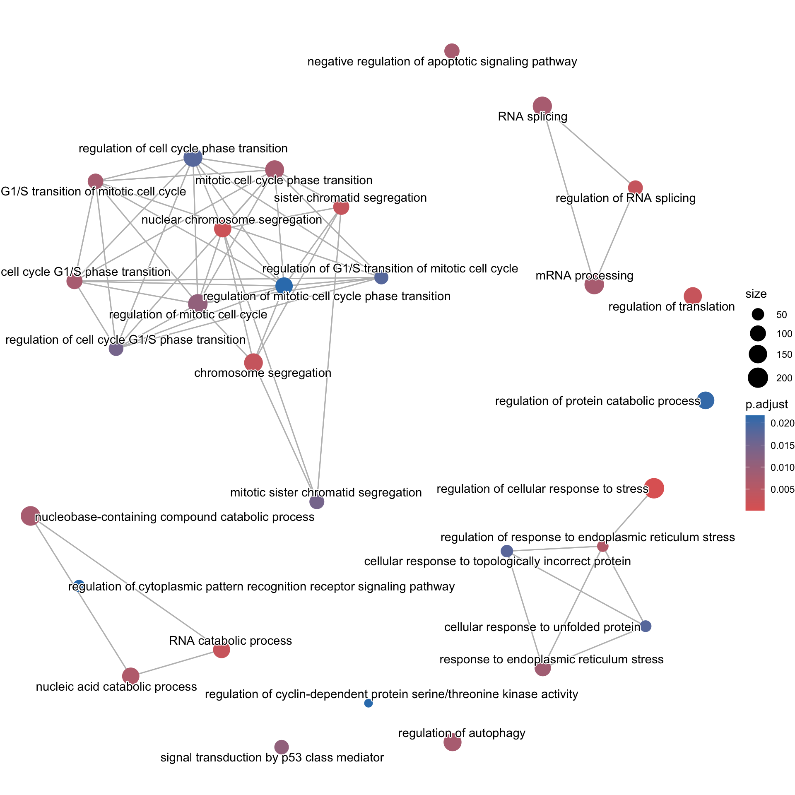
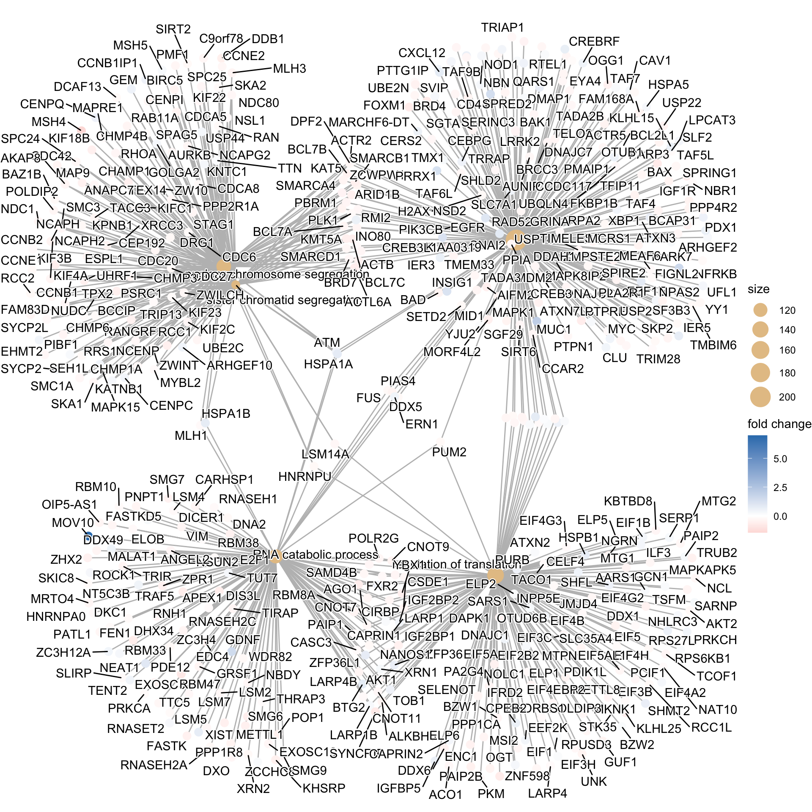
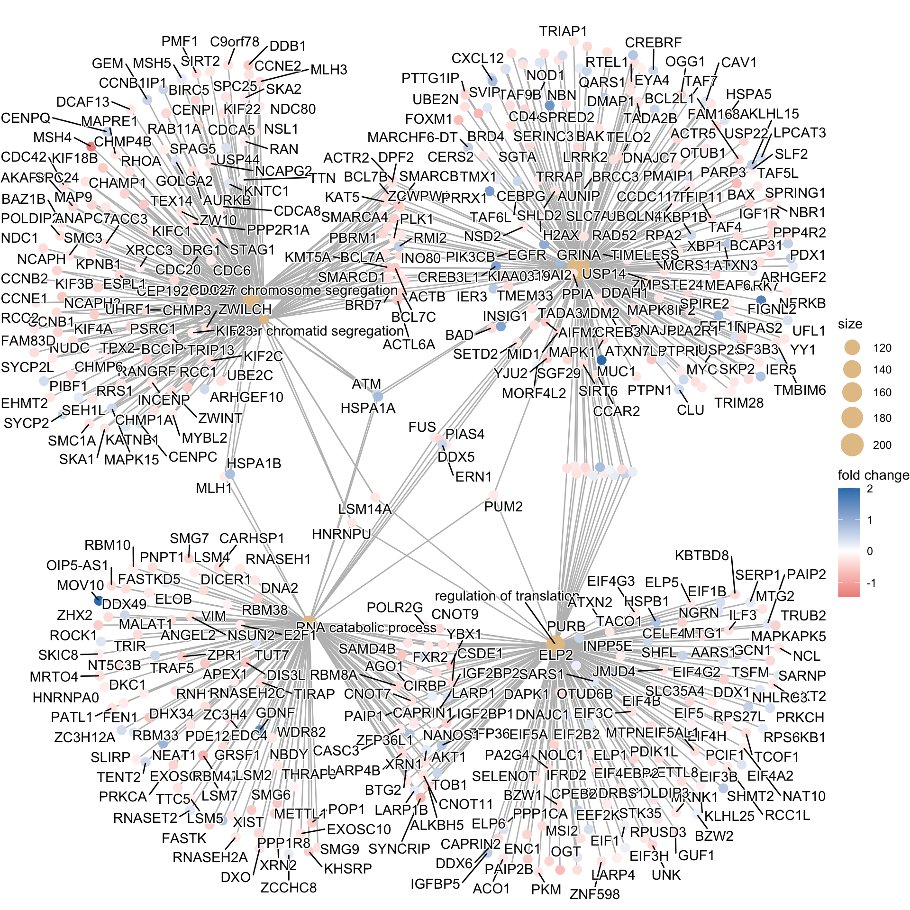
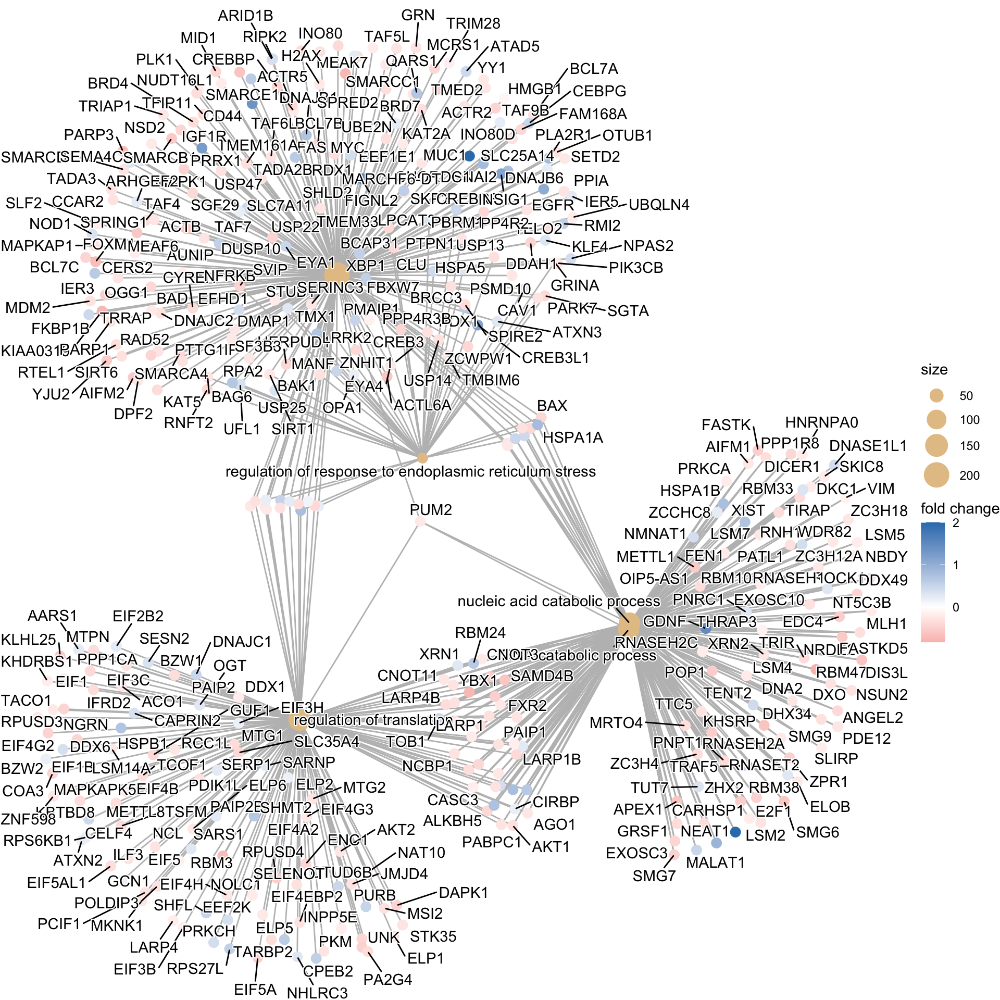

# Load libraries
library(DOSE)
library(pathview)
library(clusterProfiler)
library(org.Hs.eg.db)Functional Analysis for RNA-seq
Approximate time: 120 minutes
Learning Objectives:
- Determine how functions are attributed to genes using Gene Ontology terms
- Describe the theory of how functional enrichment tools yield statistically enriched functions or interactions
- Discuss functional analysis using over-representation analysis, and functional class scoring
- Identify popular functional analysis tools for over-representation analysis
Functional analysis
The output of RNA-seq differential expression analysis is a list of significant differentially expressed genes (DEGs). To gain greater biological insight on the differentially expressed genes there are various analyses that can be done:
- determine whether there is enrichment of known biological functions, interactions, or pathways
- identify genes’ involvement in novel pathways or networks by grouping genes together based on similar trends
- use global changes in gene expression by visualizing all genes being significantly up- or down-regulated in the context of external interaction data
Generally for any differential expression analysis, it is useful to interpret the resulting gene lists using freely available web- and R-based tools. While tools for functional analysis span a wide variety of techniques, they can loosely be categorized into three main types: over-representation analysis, functional class scoring, and pathway topology [1].

The goal of functional analysis is provide biological insight, so it’s necessary to analyze our results in the context of our experimental hypothesis: FMRP and MOV10 associate and regulate the translation of a subset of RNAs. Therefore, based on the authors’ hypothesis, we may expect the enrichment of processes/pathways related to translation, splicing, and the regulation of mRNAs, which we would need to validate experimentally.
Important
Note that all tools described below are great tools to validate experimental results and to make hypotheses. These tools suggest genes/pathways that may be involved with your condition of interest; however, you should NOT use these tools to make conclusions about the pathways involved in your experimental process. You will need to perform experimental validation of any suggested pathways.
Over-representation analysis
There are a plethora of functional enrichment tools that perform some type of “over-representation” analysis by querying databases containing information about gene function and interactions.
These databases typically categorize genes into groups (gene sets) based on shared function, involvement in a pathway, presence in a specific cellular location, or other categorizations, e.g. functional pathways, etc. Essentially, known genes are binned into categories that have been consistently named (controlled vocabulary) based on how the gene has been annotated functionally. These categories are independent of any organism; however, each organism has distinct categorizations available.
To determine whether any categories are over-represented, you can determine the probability of having the observed proportion of genes associated with a specific category in your gene list based on the proportion of genes associated with the same category in the background set (gene categorizations for the appropriate organism).


The statistical test that will determine whether something is actually over-represented is the Hypergeometric test.
Hypergeometric testing
Using the example of the first functional category above, hypergeometric distribution is a probability distribution that describes the probability of 25 genes (k) being associated with “Functional category 1”, for all genes in our gene list (n=1000), from a population of all of the genes in entire genome (N=13,000) which contains 35 genes (K) associated with “Functional category 1” [2].
The calculation of probability of k successes follows the formula:

This test will result in an adjusted p-value (after multiple test correction) for each category tested.
Gene Ontology project
One of the most widely-used categorizations is the Gene Ontology (GO) established by the Gene Ontology project.
“The Gene Ontology project is a collaborative effort to address the need for consistent descriptions of gene products across databases” [3]. The Gene Ontology Consortium maintains the GO terms, and these GO terms are incorporated into gene annotations in many of the popular repositories for animal, plant, and microbial genomes.
Tools that investigate enrichment of biological functions or interactions often use the Gene Ontology (GO) categorizations – i.e., the GO terms – to determine whether any have significantly modified representation in a given list of genes. Therefore, to best use and interpret the results from these functional analysis tools, it is helpful to have a good understanding of the GO terms themselves and their organization.
GO Ontologies
To describe the roles of genes and gene products, GO terms are organized into three independent controlled vocabularies (ontologies) in a species-independent manner:
- Biological process: refers to the biological role involving the gene or gene product, and could include “transcription”, “signal transduction”, and “apoptosis”. A biological process generally involves a chemical or physical change of the starting material or input.
- Molecular function: represents the biochemical activity of the gene product. Such activities could include “ligand”, “GTPase”, and “transporter”.
- Cellular component: refers to the location in the cell of the gene product. Cellular components could include “nucleus”, “lysosome”, and “plasma membrane”.
Each GO term has a term name (e.g., DNA repair) and a unique term accession number (GO:0005125), and a single gene product can be associated with many GO terms, since a single gene product “may function in several processes, contain domains that carry out diverse molecular functions, and participate in multiple alternative interactions with other proteins, organelles or locations in the cell” [4].
GO term hierarchy
Some gene products are well-researched, with vast quantities of data available regarding their biological processes and functions. However, other gene products have very little data available about their roles in the cell.
For example, the protein “p53” would contain a wealth of information on its roles in the cell, whereas another protein might only be known as a “membrane-bound protein” with no other information available.
The GO ontologies were developed to describe and query biological knowledge with differing levels of information available. To do this, GO ontologies are loosely hierarchical, ranging from general ‘parent’ terms to more specific ‘child’ terms. The GO ontologies are “loosely” hierarchical since ‘child’ terms can have multiple ‘parent’ terms.
Some genes with less information may only be associated with general ‘parent’ terms or no terms at all, while other genes with a lot of information be associated with many terms.

clusterProfiler
We will be using clusterProfiler to perform over-representation analysis on GO terms associated with our list of significant genes. The tool takes as input a significant gene list and a background gene list and performs statistical enrichment analysis using hypergeometric testing. The basic arguments allow the user to select the appropriate organism and GO ontology (BP, CC, MF) to test.
Running clusterProfiler
To run clusterProfiler GO over-representation analysis, we will change our gene names into Ensembl IDs, since the tool works a bit easier with the Ensembl IDs.
First load the following libraries:
For the different steps in the functional analysis, we require Ensembl and Entrez IDs. We will use the gene annotations that we generated previously to merge with our differential expression results. Before we do that, let’s subset our results tibble to only have the genes that were tested, i.e., genes whose adjusted p-values are not equal to NA.
# Untested genes have padj = NA, so let's keep genes with padj != NA
res_tableOE_tb_noNAs <- filter(res_tableOE_tb, padj != "NA" )
# Merge the AnnotationHub dataframe with the results
res_ids <- left_join(res_tableOE_tb_noNAs, annotations_ahb, by=c("gene"="gene_id"))
Note
If you were unable to generate the annotations_ahb object, you can download the annotations to your data folder by right-clicking here and selecting “Save link as…”
To read in the object, you can run the following code: annotations_ahb <- read.csv("annotations_ahb.csv")
To perform the over-representation analysis, we need a list of background genes and a list of significant genes. For our background dataset we will use all genes tested for differential expression (all genes in our results table). For our significant gene list we will use genes with p-adjusted values less than 0.05 (we could include a fold change threshold too if we have many DE genes).
# Create background dataset for hypergeometric testing using all tested genes for significance in the results
allOE_genes <- as.character(res_ids$gene)
# Extract significant results
sigOE <- dplyr::filter(res_ids, padj < 0.05)
sigOE_genes <- as.character(sigOE$gene)Now we can perform the GO enrichment analysis and save the results:
Notes for running clusterProfiler
The different organisms with annotation databases available to use with for the OrgDb argument can be found here.
{kind=link}
Also, the keyType argument may be coded as keytype in different versions of clusterProfiler.
Finally, the ont argument can accept either “BP” (Biological Process), “MF” (Molecular Function), and “CC” (Cellular Component) subontologies, or “ALL” for all three.
# Run GO enrichment analysis
ego <- enrichGO(gene = sigOE_genes,
universe = allOE_genes,
keyType = "ENSEMBL",
OrgDb = org.Hs.eg.db,
ont = "BP",
pAdjustMethod = "BH",
qvalueCutoff = 0.05,
readable = TRUE)
# Output results from GO analysis to a table
cluster_summary <- data.frame(ego)
# View results
cluster_summary %>% head() ID Description GeneRatio
GO:0080135 GO:0080135 regulation of cellular response to stress 205/3925
GO:0098813 GO:0098813 nuclear chromosome segregation 126/3925
GO:0006401 GO:0006401 RNA catabolic process 121/3925
GO:0006417 GO:0006417 regulation of translation 145/3925
GO:0000819 GO:0000819 sister chromatid segregation 101/3925
GO:0043484 GO:0043484 regulation of RNA splicing 81/3925
BgRatio RichFactor FoldEnrichment zScore pvalue
GO:0080135 492/13021 0.4166667 1.382272 5.678017 2.149930e-08
GO:0098813 289/13021 0.4359862 1.446363 5.040680 6.968059e-07
GO:0006401 280/13021 0.4321429 1.433613 4.818146 1.986663e-06
GO:0006417 347/13021 0.4178674 1.386255 4.790517 2.064600e-06
GO:0000819 227/13021 0.4449339 1.476047 4.752911 2.915791e-06
GO:0043484 174/13021 0.4655172 1.544331 4.748288 3.351963e-06
p.adjust qvalue
GO:0080135 0.0001210626 0.0001137879
GO:0098813 0.0019618569 0.0018439684
GO:0006401 0.0029064405 0.0027317916
GO:0006417 0.0029064405 0.0027317916
GO:0000819 0.0030963784 0.0029103161
GO:0043484 0.0030963784 0.0029103161
geneID
GO:0080135 RAD52/BAD/CREBBP/MAPK8IP2/ERCC1/UFL1/SNAI2/FAS/CD44/BAK1/GRN/PARP3/AIFM2/HSPA5/ARID1B/HERPUD1/PIK3CB/FAM168A/PUM2/USP13/TMEM161A/SMARCD1/ATXN3/SMARCE1/ACTB/SIRT6/ZCWPW1/ZMPSTE24/TMED2/PPP1R15A/BAX/ATXN7L3/FUS/SIRT1/BCL7C/SMARCB1/MAPK1/TFIP11/XBP1/TELO2/YY1/CSNK2A1/ACTR5/USP14/PSMD10/MID1/SLC25A14/STUB1/RIPK2/EYA1/NBN/SGTA/PIAS4/YJU2/DNAJC2/CAV1/DNAJB6/NOD1/ZNHIT1/BCL7B/CREB3/CXCL12/C1QBP/DDX5/KAT2A/TMEM33/FBXW7/NSD2/CHORDC1/BCL7A/FOXM1/SPRING1/TIMELESS/LPCAT3/EYA4/OGG1/EIF4G1/INO80D/EFHD1/PRRX1/PARK7/ARHGEF2/PRDX1/RPA2/MAPKAP1/FKBP1B/SLF2/CLU/SHLD2/TWIST1/CYREN/MORF4L2/USP22/SOX4/EEF1E1/PRMT1/AUNIP/SMARCA4/INO80/TAF4/TRIM28/DNAJB1/SERINC3/DPF2/RNFT2/MDM2/TAF5L/ACTL6A/KLF4/MYC/KIAA0319/IER3/ACTR2/PDX1/TMBIM6/TMX1/IGF1R/MEAK7/PMAIP1/BRD4/APP/PTPRF/CERS2/DUSP10/PARP1/MANF/SKP2/EGFR/ATM/SLC7A11/PLA2R1/CEBPG/DDAH1/USP25/CREB3L1/PPP1R15B/CCAR2/CCDC117/UBQLN4/ZNF385A/RPL26/TAF6L/IER5/PPP4R2/MEAF6/PBRM1/CREBRF/BRD7/PLK1/OTUB1/NUDT16L1/DNAJC7/SEMA4C/USP47/NFRKB/NPAS2/TRIAP1/TADA3/BCL2L1/QARS1/EIF2AK3/KAT5/TADA2B/SMARCC1/KLHL15/RMI2/RUVBL1/NUPR1/ATAD5/SGF29/UBE2N/DMAP1/ERN1/GRINA/TAF7/SETD2/PTTG1IP/KMT5A/HSF1/MUC1/BRCC3/BCAP31/INSIG1/TAF9B/MCRS1/H2AX/NBR1/LRRK2/SF3B3/HMGB1/PPIA/TRRAP/PTPN1/SVIP/SPRED2/MTOR/OPA1/HSPA1A/BAG6/SPIRE2/DHFR/RTEL1/MARCHF6-DT/FIGNL2/PPP4R3B
GO:0098813 POLDIP2/CDC27/BAZ1B/TACC3/NCAPH2/CENPQ/ARID1B/MSH4/NDC1/SMARCD1/RHOA/SIRT2/CDC42/TRIP13/SMC1A/SMARCE1/ACTB/MLH1/SPAG5/ZCWPW1/KIF22/NDC80/PIBF1/SEH1L/ZW10/TPX2/BIRC5/NUDC/KIF4A/CDC6/SIRT1/BCL7C/SMARCB1/CCNB1IP1/MYBL2/KIF3B/MAPRE1/CHMP4B/FAM83D/CEP192/CENPI/RAB11A/ARHGEF10/AKAP8/CCNE1/PPP2R1A/BCL7B/BCCIP/SMC3/KPNB1/RANGRF/BCL7A/CHMP3/CDC20/NSL1/STAG1/MLH3/TEX14/NCAPH/ZWINT/XRCC3/SMARCA4/INO80/CHMP1A/RAN/DPF2/CCNB1/PSRC1/CDCA8/ESPL1/USP44/ACTL6A/C9orf78/KIF23/ACTR2/KATNB1/KIF2C/CENPC/CDCA5/NCAPG2/ATM/INCENP/SPC25/SYCP2L/HNRNPU/SKA1/TTN/CCNB2/PMF1/SPC24/PBRM1/MAP9/DCAF13/GEM/BRD7/PLK1/GOLGA2/DDB1/KAT5/SMARCC1/ZWILCH/UBE2C/CCNE2/RMI2/CHMP6/AURKB/RRS1/RCC2/RCC1/MAPK15/SKA2/KMT5A/KNTC1/DRG1/KIF18B/SYCP2/ANAPC7/CHAMP1/EHMT2/HSPA1B/HSPA1A/MSH5/BAG6/KIFC1/LSM14A/UHRF1
GO:0006401 CSDE1/RNH1/VIM/RNASET2/ZCCHC8/NSUN2/METTL1/EDC4/MRTO4/THRAP3/PUM2/YBX1/ELAVL1/ROCK1/SMG6/PABPC1/IGF2BP2/MLH1/TRAF5/TUT7/CNOT3/KHSRP/XRN2/FUS/ALKBH5/AGO1/CIRBP/DICER1/APEX1/E2F1/ELOB/POP1/RNASEH2A/PIAS4/DDX49/SMG9/LSM5/EXOSC3/LARP4B/CASC3/DDX5/ZPR1/RBM24/XRN1/SMG7/PPP1R8/SLIRP/NRDE2/TRIR/ZFP36/FXR2/LSM7/LSM4/ZC3H4/DKC1/GRSF1/RBM38/DHX34/CAPRIN1/TTC5/NCBP1/PNPT1/DNA2/SSB/LARP1B/SKIC8/TOB1/NT5C3B/AKT1/CNOT9/PNRC1/ATM/LSM14B/TIRAP/CARHSP1/HNRNPU/PRKCA/MOV10/LARP1/CNOT11/ZC3H18/IGF2BP1/BTG2/RBM47/ZC3H12A/WDR82/TENT2/FASTK/PATL1/DIS3L/POLR2G/FEN1/GDNF/EXOSC10/RNASEH1/PAIP1/RNASEH2C/ANGEL2/PDE12/HNRNPA0/ERN1/ZHX2/SAMD4B/RBM10/RBM33/ZFP36L1/SECISBP2/NANOS1/CNOT7/NBDY/DXO/HSPA1B/HSPA1A/LSM2/FASTKD5/XIST/NEAT1/OIP5-AS1/MALAT1/RBM8A/SYNCRIP
GO:0006417 CSDE1/PRKCH/SARS1/PUM2/EIF4B/YBX1/ELAVL1/PKM/ELP1/PABPC1/TCOF1/IGF2BP2/EIF4G3/MKNK1/DDX1/JMJD4/BZW1/PPP1R15A/CNOT3/MAPKAPK5/GCN1/AARS1/ALKBH5/AGO1/CIRBP/POLDIP3/EIF5/PCIF1/MTG2/CSNK2A1/CELF4/RBM3/EEF2K/AKT2/MTPN/HSPB1/EIF3B/EIF4H/LARP4B/CASC3/RPS6KB1/C1QBP/EIF4G2/DDX6/CAPRIN2/RBM24/XRN1/EIF1B/EIF4G1/NCL/IGFBP5/EIF2B2/PAIP2/SERP1/KHDRBS1/ACO1/TSFM/METTL8/PAIP2B/SOX4/STK35/PRMT1/ZFP36/FXR2/ILF3/SESN2/SHFL/UNK/EIF5A/ELP2/NAT10/CAPRIN1/BZW2/TACO1/DNAJC1/NCBP1/CPEB2/SSB/LARP1B/TARBP2/TOB1/APP/AKT1/CNOT9/PURB/OGT/EIF3H/INPP5E/EIF4EBP2/MTG1/LSM14B/GUF1/HNRNPU/MSI2/OTUD6B/LARP1/EIF4A2/RPUSD3/CNOT11/PPP1R15B/IGF2BP1/BTG2/ZNF385A/LARP4/RPL26/KBTBD8/ELP6/RPUSD4/NOLC1/TRUB2/ZNF598/POLR2G/ELP5/PA2G4/ENC1/EIF2AK3/PAIP1/PPP1CA/EIF1/PDIK1L/SLC35A4/SAMD4B/SHMT2/NGRN/KLHL25/COA3/EIF3C/RPS27L/ZFP36L1/SECISBP2/NANOS1/NHLRC3/DAPK1/CNOT7/MTOR/SELENOT/ATXN2/SARNP/IFRD2/DHFR/EIF5AL1/LSM14A/RBM8A/SYNCRIP/RCC1L
GO:0000819 POLDIP2/CDC27/BAZ1B/TACC3/NCAPH2/ARID1B/SMARCD1/RHOA/TRIP13/SMC1A/SMARCE1/ACTB/SPAG5/KIF22/NDC80/PIBF1/SEH1L/ZW10/TPX2/BIRC5/NUDC/KIF4A/CDC6/SIRT1/BCL7C/SMARCB1/MYBL2/KIF3B/MAPRE1/CHMP4B/CEP192/CENPI/RAB11A/ARHGEF10/AKAP8/PPP2R1A/BCL7B/BCCIP/SMC3/KPNB1/RANGRF/BCL7A/CHMP3/CDC20/NSL1/STAG1/TEX14/NCAPH/ZWINT/XRCC3/SMARCA4/INO80/CHMP1A/RAN/DPF2/CCNB1/PSRC1/CDCA8/ESPL1/USP44/ACTL6A/KIF23/KATNB1/KIF2C/CENPC/CDCA5/NCAPG2/ATM/INCENP/SPC25/HNRNPU/SKA1/TTN/SPC24/PBRM1/MAP9/BRD7/PLK1/GOLGA2/KAT5/SMARCC1/ZWILCH/UBE2C/RMI2/CHMP6/AURKB/RRS1/RCC1/MAPK15/SKA2/KMT5A/KNTC1/DRG1/KIF18B/ANAPC7/CHAMP1/HSPA1B/HSPA1A/KIFC1/LSM14A/UHRF1
GO:0043484 PTBP1/CLK1/CELF2/THRAP3/SFSWAP/U2AF2/DAZAP1/FAM50A/CLNS1A/MBNL3/RBM22/ATXN7L3/FUS/CIRBP/RBFOX2/RBM23/PRMT5/ACIN1/CELF4/PQBP1/RBM3/HNRNPL/SNRNP70/C1QBP/DDX5/KAT2A/ZPR1/HSPA8/PRPF19/NUP98/SRSF9/RBM24/NCL/WDR77/PRDX6/KHDRBS1/SMU1/SRSF6/USP22/AHNAK/RBM42/HNRNPH2/RBM39/GRSF1/RBM38/ARGLU1/HNRNPA1/TAF5L/NCBP1/TMBIM6/MBNL2/MBNL1/HNRNPU/RRP1B/TAF6L/ZNF326/RBM15/CCNL1/RBM47/FASTK/RBPMS2/SF1/HNRNPF/TADA3/EXOSC10/TADA2B/EIF1/SGF29/ERN1/ZBTB7A/PUF60/RBM10/RBM11/SF3B3/TRRAP/RPS26/AKAP17A/RBM20/HSPA1A/RBM15B/RBM8A
Count
GO:0080135 205
GO:0098813 126
GO:0006401 121
GO:0006417 145
GO:0000819 101
GO:0043484 81# Save results
write.csv(cluster_summary, "../results/clusterProfiler_Mov10oe.csv")
Note
Instead of saving just the results summary from the ego object, it might also be beneficial to save the object itself. The save() function enables you to save it as a .rda file, e.g. save(ego, file="results/ego.rda").
The complementary function to save() is the function load(), e.g. ego <- load(file="results/ego.rda").
This is a useful set of functions to know, since it enables one to preserve analyses at specific stages and reload them when needed. More information about these functions can be found here & here.
Important
You can also perform GO enrichment analysis with only the up or down regulated genes in addition to performing it for the full list of significant genes. This can be useful to identify GO terms impacted in one direction and not the other. If very few genes are in any of these lists (< 50, roughly) it may not be possible to get any significant GO terms.
# Extract upregulated genes
sigOE_up <- dplyr::filter(res_ids, padj < 0.05 & log2FoldChange > 0)
sigOE_up_genes <- as.character(sigOE_up$gene)
## Extract downregulated genes
sigOE_down <- dplyr::filter(res_ids, padj < 0.05 & log2FoldChange < 0)
sigOE_down_genes <- as.character(sigOE_down$gene)You can then create ego_up & ego_down objects by running the enrichGO() function for gene = sigOE_up_genes or gene = sigOE_down_genes.
Visualizing clusterProfiler results
clusterProfiler has a variety of options for viewing the over-represented GO terms. We will explore the dotplot, enrichment plot, and the category netplot.
The dotplot shows the number of genes associated with the first 50 terms (size) and the p-adjusted values for these terms (color). This plot displays the top 30 GO terms by gene ratio (# genes related to GO term / total number of sig genes), not p-adjusted value.
# Dotplot for the top 30 GO terms
dotplot(ego, showCategory=30)
# Save the figure: it has to be very large for the text labels to all fit!
ggsave(filename = "results/plots_OE_ORA_dotplot.pdf", width = 8, height = 20)The next plot is the enrichment GO plot, which shows the relationship between the top 30 most significantly enriched GO terms (by padj), by grouping similar terms together. Before creating the plot, we will need to obtain the similarity between terms using the pairwise_termsim() function (instructions for emapplot). In the enrichment plot, the color represents the p-values relative to the other displayed terms (brighter red is more significant), and the size of the terms represents the number of genes that are significant from our list.
# Add similarity matrix to the termsim slot of enrichment result
ego <- enrichplot::pairwise_termsim(ego)
# Enrichmap clusters the 30 most significant (by padj) GO terms to visualize relationships between terms
emapplot(ego, showCategory = 30)
# Save the figure
ggsave(filename = "results/plots_OE_ORA_enrich.pdf", width = 10, height = 10)Finally, the category netplot shows the relationships between the genes associated with the top five most significant GO terms and the fold changes of the significant genes associated with these terms (color). The size of the GO terms reflects the number of genes in the terms, with terms with more genes being larger. This plot is particularly useful for hypothesis generation in identifying genes that may be important to several of the most affected processes.
Note
You may need to install the ggnewscale package using install.packages("ggnewscale") for the cnetplot() function to work.
# To color genes by log2 fold changes, we need to extract the log2 fold changes from our results table creating a named vector
OE_foldchanges <- sigOE$log2FoldChange
names(OE_foldchanges) <- sigOE$gene
# Cnetplot details the genes associated with one or more terms - by default gives the top 5 significant terms (by padj)
cnetplot(ego,
showCategory = 5,
foldChange = OE_foldchanges,
vertex.label.font = 6)
# If some of the high fold changes are getting drowned out due to a large range, you could set a maximum fold change value
OE_foldchanges <- ifelse(OE_foldchanges > 2, 2, OE_foldchanges)
OE_foldchanges <- ifelse(OE_foldchanges < -2, -2, OE_foldchanges)
cnetplot(ego,
showCategory = 5,
foldChange = OE_foldchanges,
vertex.label.font = 6)
# Save the figure
ggsave(filename = "results/plots_OE_ORA_net.pdf", width = 10, height = 10)If you are interested in significant processes that are not among the top five, you can subset your ego dataset to only display these processes:
# Subsetting the ego results without overwriting original `ego` variable
ego2 <- ego
ego2@result <- ego@result[c(1,3,4,8,9),]
# Plotting terms of interest
cnetplot(ego2,
categorySize = "pvalue",
foldChange = OE_foldchanges,
showCategory = 5,
vertex.label.font = 6)